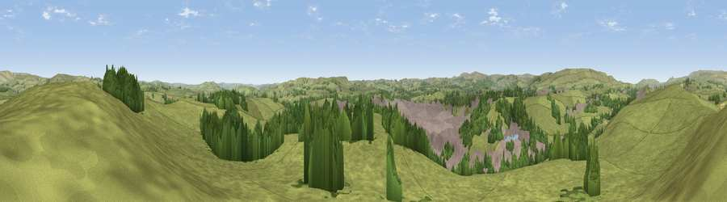

Viewpoint near Tunstead
#21371 in England · top 36% of its area beats it · near TunsteadThe view, rendered

A 360° render of this exact spot computed from the terrain model, tree cover and land cover — summer colours, afternoon light, calibrated against photographs of famous viewpoints. Real trees, hedges and buildings will differ in detail.
The panorama
Grey silhouette: terrain skyline in each direction (720 bearings, Earth curvature and refraction included). Dashed green: skyline with trees (+15 m) and buildings (+8 m) as obstacles. Blue strip: how far the ground is visible on each bearing.
Where the view opens
Wedge length = distance to the farthest visible ground on that bearing (vegetation-aware). Rings at 10, 25 and 50 km.
What fills the view
77% grassland · 15% woodland · 7% built-up
Angular shares of the visible panorama (visual magnitude), not map area. Landscape diversity 0.31 (0–1 Shannon).
Key numbers
More beautiful places nearby
The staircase of upgrades: each row has a higher view potential than everything closer. Driving times are estimates from straight-line distance, calibrated against real road routing — check an actual route before setting out.
| Place | Direction | Drive | Score |
|---|---|---|---|
| Viewpoint near Dove Holes | WNW · 5 km | ~10 min | 65.9 |
| Black Edge - South Top | W · 5 km | ~10 min | 66.2 |
| Combs Head - North West Top | W · 7 km | ~14 min | 68.2 |
| Lord's Seat | N · 8 km | ~16 min | 73.1 |
| Viewpoint near Meerbrook | SW · 16 km | ~28 min | 73.5 |
| Viewpoint near Thornhill | NE · 16 km | ~29 min | 74.1 |
| Tissington Hill | S · 23 km | ~38 min | 75.5 |
| Wild Bank | NNW · 25 km | ~41 min | 76.2 |
53.27660, -1.84212 · source: screening · position refined by local search. Computed location — check access rights before visiting.